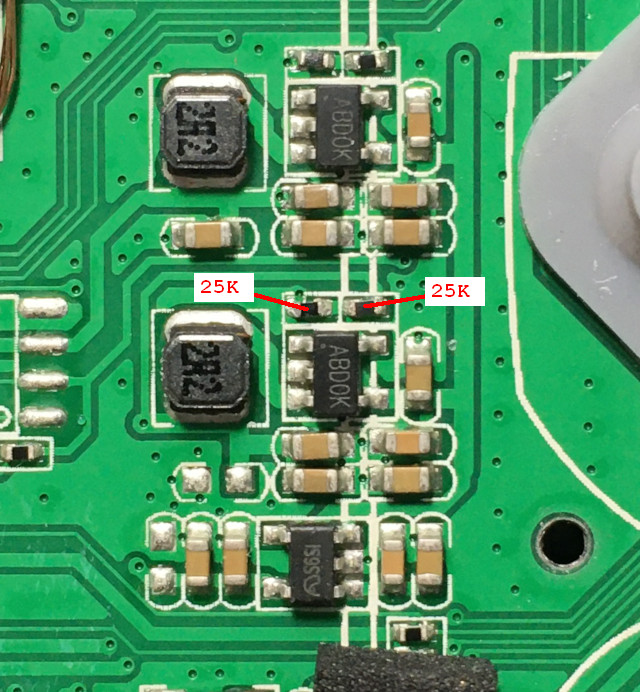
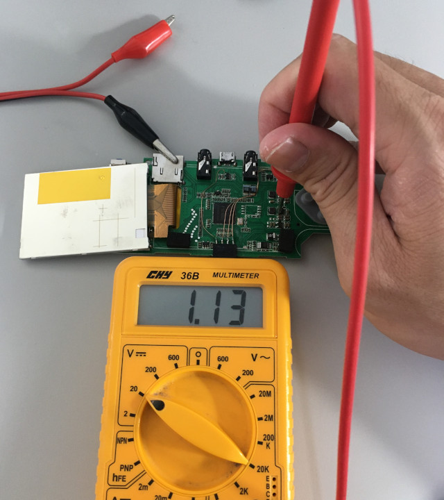
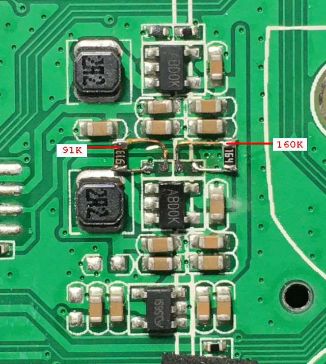
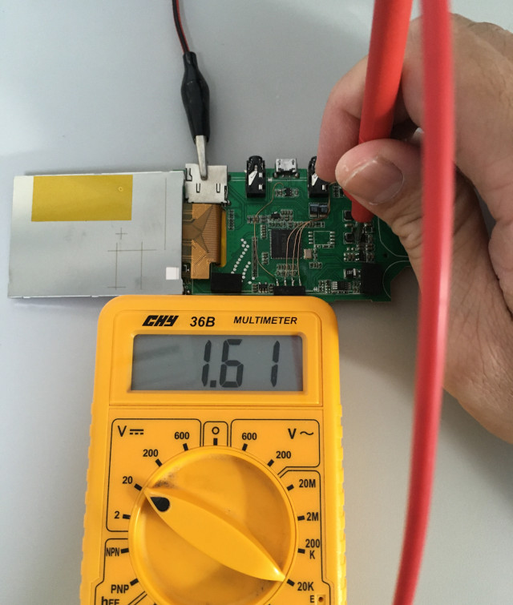

掌機 - PocketGo - CPU超頻
兩顆電阻都是25K

電壓1.13V

司徒做過很多實驗，發現1.2GHz是一個臨界值，超過1.2GHz後，效能沒有明顯改善，同時，為了保持正常晶片溫度，1.65V的CORE-VDD電壓是最適合，因此，司徒把電阻改成如下160K和91K(必須使用1%精密電阻)，可以超頻到1.2GHz，而且讓F1C100S的溫度保持正常，通過公式換算：(0.6 * (160K / 91K)) + 0.6 = 1.65V

實際電壓
